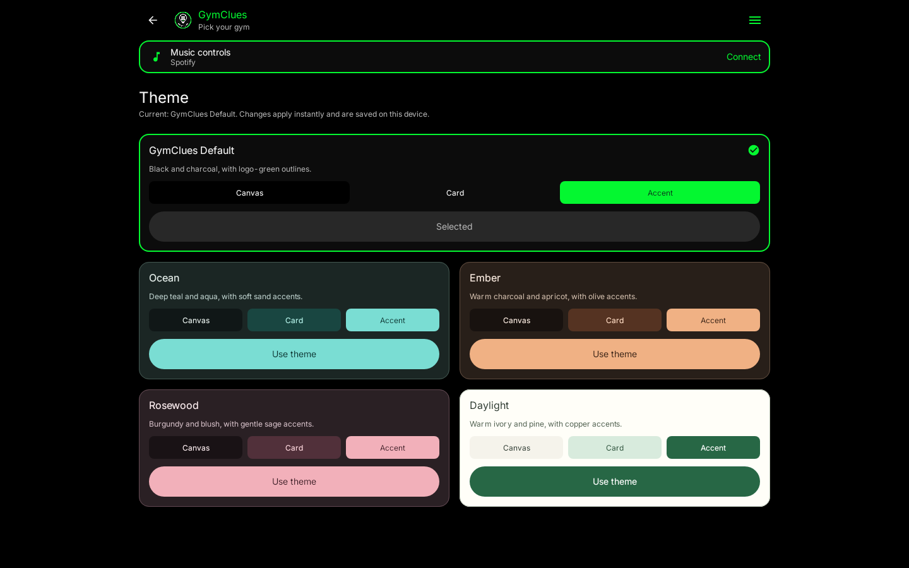

Five ways to make GymClues yours
Open Menu > Theme in the app. Choose GymClues Default, Ocean, Ember, Rosewood or Daylight. Changes apply instantly and stay selected when you reopen the app.
Native Android renders, with no mockup UI. Click any image for its original size. Design and checks · Original app redesign
All five choices at 1440dp
Compare the palettes
Each preview uses the same empty-account state. Zeros are actual empty-state values; no activity is invented.
Phone, tablet and guides